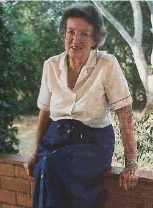

Biographies: Mary Leakey

Mary Douglas Nicol was born on February 6, 1913. Her father, Erskine Nicol, was a popular landscape artist, and Mary spent much of her childhood in Europe, especially in the Dordogne and at Les Eyzies, a region rich in prehistoric art and archaeological sites, topics in which Mary became interested. Her idyllic life was shattered in 1926 when her father, to whom she was exceptionally close, died, and Mary and her mother moved back to London. Attempts to give her some conventional education failed when the rebellious girl was expelled from two Catholic schools. In 1930 she began auditing archaeology and geology university courses, and she worked on archaeological digs and as a scientific illustrator. She met Louis Leakey in 1933 at Cambridge, and soon began an affair with him. On his next expedition to Africa, she arranged to meet him there, travelled home with him, and soon moved in with him. After his wife Frida divorced him, they were married in late 1936. She returned to Kenya with Louis the following year, and in the subsequent decades worked in many excavations. An important discovery of Mary's was the first fossil skull of the extinct Miocene primate Proconsul. Mary primarily worked as an archeologist rather than a physical anthropologist.En 1959, Mary a découvert le fossile du "Zinjanthropus" (Australopithecus boisei) qui devait propulser la famille Leakey vers la renommée mondiale. À partir du milieu des années 1960, elle a vécu presque à temps plein à la gorge d'Olduvai, souvent seule, tandis que Louis travaillait sur d'autres projets. Elle et Louis se sont éloignés l'un de l'autre, en partie à cause de ses aventures amoureuses et en partie parce que Louis divisait son temps entre de nombreux autres projets. En 1974, elle a commencé des fouilles à Laetoli, à proximité, et en 1976, son équipe a découvert un grand nombre d'empreintes animales fossilisées dans des cendres déposées par un volcan. En 1978, ils ont trouvé ce qui allait devenir sa plus grande découverte, des pistes d'empreintes adjacentes laissées par deux hominidés bipèdes.
En 1983, Mary a pris sa retraite du travail de terrain actif, en se déplaçant de la gorge d'Olduvai à Nairobi, où elle avait vécu pendant près de 20 ans. Elle est décédée en 1996 à l'âge de quatre-vingt-trois ans. Bien que ce soit Louis Leakey qui ait été la figure plus charismatique et mieux connue, Mary est devenue une scientifique célèbre à part entière. Bien qu'elle n'ait jamais obtenu de diplôme, à la fin de sa vie, elle a reçu de nombreux diplômes honorifiques et autres distinctions. Il est généralement admis que Mary était une meilleure scientifique, beaucoup plus méticuleuse et prudente que le souvent imprudent Louis. Ses prodigieuses réalisations en archéologie en font une figure majeure dans le domaine.
Références
Leakey M.D. (1984): Disclosing the past. New York: Doubleday. (Mary Leakey's autobiography)Morell V. (1995) : Passions ancestrales : la famille Leakey et la quête des débuts de l'humanité. New York : Simon & Schuster.
Mary Leakey : Mise au jour de l'histoire (un entretien paru dans Scientific American)
Mary Leakey, chasseuse de fossiles
Cette page fait partie de la FAQ sur les hominidés fossiles de l'Archive TalkOrigins.
Page d'accueil |
Espèces |
Fossiles |
Créationnisme |
Lecture |
Références
Illustrations |
Nouveautés |
Retour d'information |
Recherche |
Liens |
Fiction
http://www.talkorigins.org/faqs/homs/mleakey.html, 04/24/98
Copyright © Jim Foley
|| Email moi